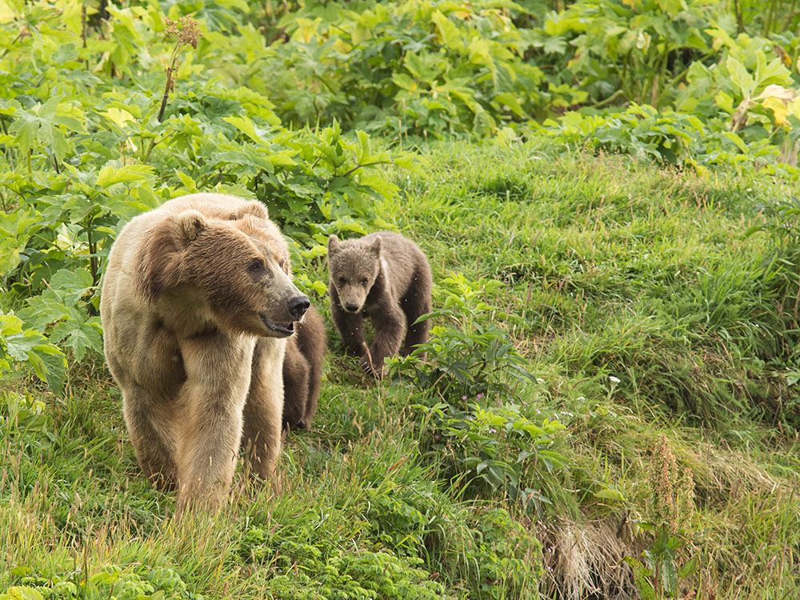

Refuge containing seven major rivers and about 100 streams, a spawning ground for all five species of Pacific Ocean salmon, as well as a nesting ground for 250 species of bird, and habitat for the native Kodiak bear
General Information
How to Get There
From Anchorage, AK (~250 mi): Fly Alaska Airlines to Kodiak Airport (ADQ) ~1 hour, then charter a floatplane or boat from Kodiak to the refuge interior, as no public roads access the refuge from Kodiak city.
Overview
Kodiak National Wildlife Refuge covers the southwestern two-thirds of Kodiak Island and Uganik and Ban islands, home of the Kodiak brown bear, the largest bear on land, with about 3,500 on the archipelago. It has seven major rivers and about 100 streams, with spawning of all five Pacific salmon species, and a mild, rainy climate, with Sitka spruce forest. There is no road access, so visitors come by floatplane or boat, and bear viewing tours run from Kodiak.
Things to Do
Explore One of Alaska's Premier Wildlife Refuges
Kodiak National Wildlife Refuge protects approximately 1.9 million acres across the Kodiak Archipelago and preserves diverse habitats including rugged mountains, tundra, rivers, lakes, wetlands, coastal bays, and salmon-bearing streams. Accessible primarily by boat or floatplane, the refuge offers visitors an exceptional opportunity to experience Alaska's wilderness and abundant wildlife.
View the Famous Kodiak Brown Bear
The refuge is internationally recognized for its population of Kodiak brown bears. Visitors travel from around the world to observe these impressive animals feeding on salmon and roaming the refuge's wild landscapes. Guided bear-viewing trips and flightseeing excursions provide some of the best opportunities to safely observe bears in their natural habitat.
Experience World-Class Wildlife Viewing
In addition to Kodiak brown bears, the refuge supports a variety of wildlife including elk, Sitka black-tailed deer, mountain goats, foxes, river otters, bald eagles, and countless marine species. Wildlife photographers and nature enthusiasts can enjoy exceptional opportunities throughout the refuge.
Fish Remote Rivers and Lakes
Kodiak National Wildlife Refuge is renowned for its fishing opportunities. Popular destinations such as the Karluk, Ayakulik, and Uganik Rivers attract anglers seeking salmon, steelhead, and rainbow trout. The region's healthy fisheries make it one of Alaska's most respected sportfishing destinations.
Kayak and Explore Coastal Waters
Protected bays, fjords, and coastal waterways provide excellent opportunities for kayaking and wilderness exploration. Paddlers can experience remote shorelines, observe marine wildlife, and enjoy spectacular scenery while traveling through some of Alaska's most pristine coastal environments.
Camp and Backpack in the Wilderness
Backpacking and primitive camping are popular ways to experience the refuge. Visitors can explore vast roadless landscapes while enjoying solitude and opportunities to observe wildlife. Proper planning and bear safety precautions are essential due to the refuge's remote nature and frequent bear activity.
Stay in Public-Use Cabins
The refuge maintains several public-use cabins that provide access to outstanding fishing, hunting, wildlife viewing, and backcountry recreation areas. These cabins are accessible by boat or floatplane and offer a unique way to spend multiple days exploring the wilderness.
Visit the Kodiak National Wildlife Refuge Visitor Center
Located in downtown Kodiak, the visitor center features exhibits about local ecosystems, wildlife, and Alutiiq culture. Visitors can view a complete gray whale skeleton, watch educational films, obtain maps and information, and learn about bear safety before heading into the refuge.
Top Trails
Frazer Lake Bear Viewing Trail
Length: Approximately 1.25 miles one way
Elevation Gain: Minimal
Difficulty: Easy
This trail near Frazer Lake is commonly used during guided bear-viewing experiences and provides access to areas where Kodiak brown bears frequently gather during salmon runs. The route offers exceptional wildlife-viewing opportunities in a controlled and managed setting.
Ayakulik River Backcountry Routes
Length: Variable multi-mile routes
Elevation Gain: Varies
Difficulty: Moderate to Strenuous
The Ayakulik River region offers opportunities for experienced hikers and backpackers to explore remote wilderness landscapes while enjoying world-class fishing, wildlife viewing, and access to some of the refuge's most scenic terrain.
Karluk River Corridor Exploration
Length: Variable backcountry routes
Elevation Gain: Minimal to Moderate
Difficulty: Moderate
The Karluk River area is one of the refuge's premier destinations for fishing, wildlife observation, and wilderness travel. Visitors can experience salmon runs, birdwatching opportunities, and views of the surrounding mountains and valleys.
This article uses material from the Wikipedia article and official pages for Kodiak National Wildlife Refuge - U.S. Fish and Wildlife Service, Kodiak National Wildlife Refuge Activities, Kodiak National Wildlife Refuge, released under the Creative Commons Attribution-Share-Alike License 3.0.
